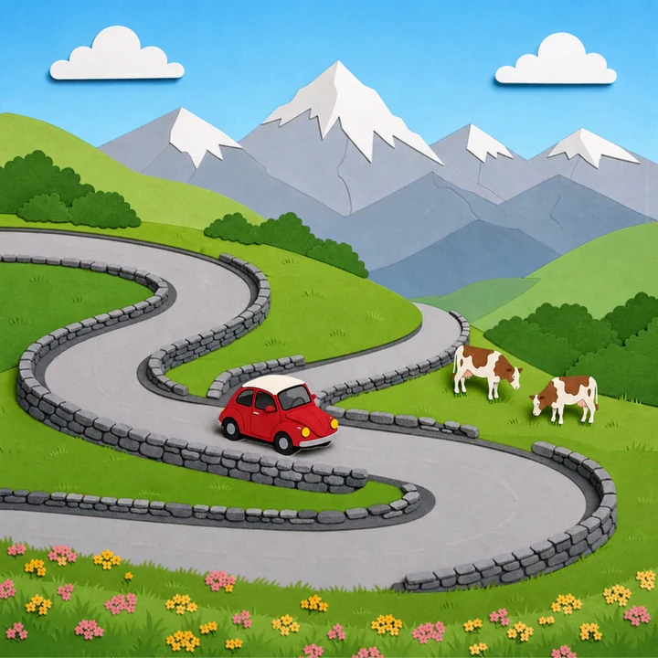
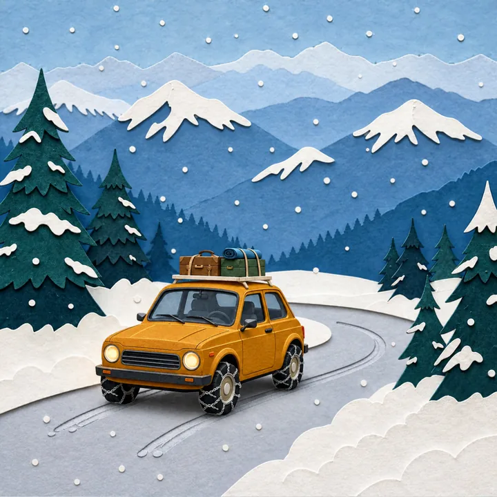
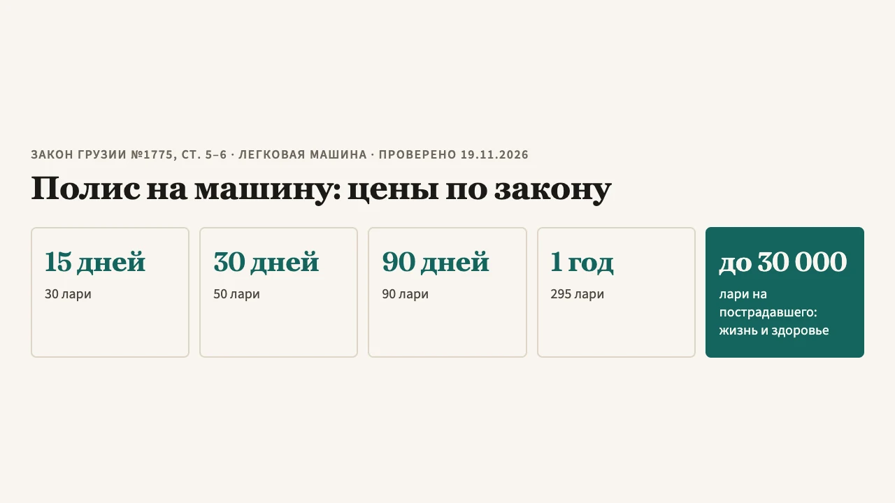

- Права иностранца
- до года с последнего въезда
- Полис на машину
- от 15 дней, 30 лари по закону
- При ДТП
- 112 и оставаться на месте
- Зимой в горах
- шины или цепи
- Скорая
- 112
Статья входит в справочник о медицине для путешественников.
Въезд, документы и границу мы здесь не разбираем — о них подробно рассказывает статья «как въехать в Грузию на машине: документы и Верхний Ларс» на 100doc.ge. Здесь — о том, что ждёт после пункта пропуска: права, правила, трассы, обязательный полис и порядок действий в аварии.
Российские права в Грузии
Ездить по иностранным правам можно, пока они действуют, но не дольше одного года с последнего въезда в страну. Так сказано в статье 49 Приказа министра внутренних дел №598 от 1 августа 2012 года. Текст есть только на грузинском, выше — наш пересказ.
Срок считается от последнего въезда, а не от первого. Истёк срок самих прав — водить по ним уже нельзя, даже если год не прошёл.
Принимаются ли российские права, нормы прямо не называют: ни Приказ №598, ни Закон о дорожном движении не перечисляют страны. Поэтому проверьте до поездки, а если берёте машину напрокат — уточните у прокатной компании, какие документы она примет.
Перевод: когда он нужен
Когда данные в правах написаны не на грузинском и не латиницей. Так сказано в английской редакции Закона о дорожном движении на matsne (на английском), статья 21(17).
По этой норме водитель возит с собой и показывает полиции по требованию:
- права, действительные в Грузии для категории машины, которой он управляет;
- документы о регистрации авто;
- заверенный перевод этих документов, если данные в них не на грузинском и не латиницей.
Английский текст на matsne — редакция 2019 года, а Закон с тех пор меняли. Действующую версию сверяйте на matsne.gov.ge.
Что советует Канада
Правительство Канады рекомендует своим гражданам сделать нотариальный перевод прав на грузинский. Международное удостоверение (IDP) оно тоже рекомендует: его могут потребовать прокатные компании и страховщики.

Наш совет. Возьмите в поездку права, их перевод и перевод свидетельства о регистрации машины, заверенные до поездки, и международное удостоверение. Так проще ответить и на требование Закона о дорожном движении, и на вопрос проката.
Правила дорожного движения: что непривычно
Главное отличие — приоритет справа. На перекрёстке, где вы не на главной, уступайте тем, кто едет справа, а на круге — тем, кто на него въезжает. Так описывает ПДД Грузии правительство Канады (на английском).
Британский МИД на GOV.UK (на английском) предупреждает: разметка и право проезда здесь могут сбивать с толку, манера езды бывает непредсказуемой, а многие машины в плохом состоянии.
Канада добавляет, что водители часто перестраиваются, превышают скорость, садятся за руль пьяными и бывают агрессивны. Пешеходы нередко переходят посреди проезжей части.
Знаки в сёлах
В сельской местности знаков мало, и они могут быть только на грузинском, пишет Канада. Латинской подписи под названием села может не оказаться.
Наш совет. Проложите маршрут заранее и скачайте карту в телефон: так проще не пропустить поворот, если указатель не прочитать. Канада тоже советует планировать поездку по сельским районам заранее.
Скорость и алкоголь
Лимиты скорости записаны в Законе о дорожном движении, а порог алкоголя и штрафы — в Кодексе об административных правонарушениях (оба на английском). Цифры мы не приводим: английские тексты на matsne — старые редакции, и нормы могли измениться. Проверьте действующую редакцию перед поездкой.
Наказания за вождение в нетрезвом виде строгие, а допустимый уровень алкоголя ниже британского, пишет GOV.UK. Вывод простой: если вы за рулём, лучше не пить совсем.
Размеры штрафов мы тоже не называем: суммы меняются, смотрите действующую редакцию Кодекса.
Дороги: ночь, скот, горы и зима
В Тбилиси и крупных городах покрытие в целом хорошее, пишет Канада. Сложности начинаются за городом и особенно в темноте.
GOV.UK советует быть особенно осторожными ночью. Дороги вне городов часто плохо освещены и разбиты, а на проезжую часть выходит скот.

Чего ждать в сёлах
По данным Канады, в сельской местности встречаются:
- грунт и неровное покрытие;
- люки, которые торчат над асфальтом или проваливаются;
- скот на проезжей части;
- мало знаков и слабое освещение;
- скользкое покрытие и снег зимой.
Смертельные ДТП в Грузии часты и входят в главные причины смерти в стране, предупреждает Канада. Её советы: ехать оборонительно, не отвечать на агрессию других водителей, не ездить в темноте и держать телефон заряженным.
Если едете в отдалённые районы, GOV.UK советует взять авто, пригодное для бездорожья, и проверять погоду на месте.
Горы и зима
Зимой в горах на авто должны быть зимние шины или цепи — Канада пишет об этом как об обязательном условии. Без них на перевал лучше не ехать.
Дождь, паводки и снег на высоте портят дороги и мосты, иногда проезд становится невозможным, а оползни частые, предупреждает GOV.UK. В отдалённых районах помощь врача может быть далеко.

Военно-Грузинская дорога зимой
Перед выездом проверьте, открыт ли проезд: ограничения публикует Департамент автомобильных дорог на georoad.gov.ge. Это горный маршрут, и всё сказанное выше про снег, цепи и оползни относится к нему в первую очередь.
По ней едут в Казбеги и Гудаури. Что посмотреть и где врач по пути — в наших путеводителях по Казбеги и Гудаури.
Наш совет. Выезжайте в горы утром, чтобы спуститься засветло, и смотрите georoad.gov.ge в день поездки, а не накануне.
Страховка на машину в Грузию: что требует закон
Если вы въехали на авто с иностранной регистрацией, владелец или водитель обязан иметь полис гражданской ответственности на весь срок пребывания в стране. Это есть в статье 3 Закона №1775 от 15 декабря 2017 года (на английском); обязанность действует с 1 марта 2018 года.
По сути это местный аналог ОСАГО: он платит тем, кому вы причинили вред.
Как купить
Об обязанности на пункте пропуска по закону должны разъяснить полиция или таможня. Купить полис можно у страховщика, в Центре обязательного страхования, у агента, брокера или электронной оплатой. Покрытие начинается с момента оплаты (ст. 3).
Сколько стоит по тексту закона
Цены записаны прямо в статье 5. Минимальный срок — 15 дней. Для легковой массой до 3 500 кг и до 8 пассажирских мест, не считая водителя:
- 15 дней — 30 лари;
- 30 дней — 50 лари;
- 90 дней — 90 лари;
- год — 295 лари.
Для мотоцикла с двигателем объёмом больше 50 см³ — 20, 35, 70 и 215 лари за те же сроки. Так в тексте закона; актуальную цену проверьте при покупке.
Что покрывает полис
Только вред, который вы причинили другим (ст. 6–7):
- жизнь и здоровье — до 30 000 лари на пострадавшего и до 300 000 лари на случай; из них на лечение — до 15 000 лари;
- имущество — до 25 000 лари на пострадавшего и до 50 000 лари на случай.
Ваши собственные травмы он не оплачивает. Для них нужен медицинский полис для въезда с покрытием не меньше 30 000 лари — подробнее в нашем разделе о въезде.

Наш совет. Считайте срок по всей поездке, с запасом на задержку в горах, и сохраните подтверждение оплаты в телефоне.
ДТП: что делать
Звоните 112 и оставайтесь на месте. Для машины с иностранной регистрацией это прямо записано в статье 8 Закона №1775: сразу сообщить о ДТП в 112 и в тот же Центр, через который покупают полис, и ждать приезда уполномоченного лица. Уехать можно, только если вам или пострадавшему срочно нужно в больницу.
Если есть пострадавшие
Наберите 112 и попросите скорую — так советует GOV.UK (на английском). Как устроен вызов, читайте в нашем материале о скорой помощи (на английском).
За пределами Тбилиси медпомощь ограничена, предупреждает GOV.UK. В отдалённых районах и полиция может ехать значительно дольше, пишет Канада. Поэтому держите телефон заряженным, а номер 112 — в памяти.
Кто за что платит
Полис на машину платит другим: лечение пострадавшего — до 15 000 лари, вред имуществу — до 25 000 лари. Ваши травмы должен покрывать медицинский полис для въезда — проверьте в его условиях исключения для водителей.
Срочно — 112 и ближайшая больница. Если после аварии нужен осмотр травматолога, в Тбилиси выбор клиник больше.

Наш совет. До поездки найдите на карте клиники по своему маршруту. Заряженный телефон советует и Канада.
Частые вопросы
Нужен ли полис для авто с иностранными номерами?
Да. Закон №1775 требует его на весь срок пребывания. Обязанность по закону должны разъяснить на пункте пропуска, а купить можно в том числе электронной оплатой. Действует он с момента оплаты.
Сколько стоит обязательный полис на машину?
За легковую по тексту закона: 15 дней — 30 лари, 30 дней — 50 лари, 90 дней — 90 лари, год — 295 лари. Актуальную цену проверьте при покупке.
Можно ли ездить по Грузии с российскими правами?
Нормы не называют российские права прямо — проверьте до поездки. По Приказу МВД №598 иностранные права действуют, пока не истёк их срок, но не дольше года с последнего въезда. Если данные не на грузинском и не латиницей, нужен заверенный перевод.
Нужно ли международное удостоверение?
Канада его рекомендует: прокатные компании и страховщики могут его потребовать. Если берёте авто напрокат, уточните заранее.
Что делать при ДТП в Грузии?
Позвонить 112, сообщить в Центр и оставаться на месте до приезда уполномоченного лица. Уезжать можно, только если вам или пострадавшему срочно нужно в больницу.
Какие шины нужны зимой в горах?
Зимние шины или цепи. Канада пишет, что зимой в горах они обязательны.
Открыта ли Военно-Грузинская дорога?
Смотрите ограничения проезда на georoad.gov.ge в день поездки. Снег, дожди и оползни могут сделать проезд невозможным.
Где искать врача после аварии?
Срочно — 112, просите скорую. Вне Тбилиси медпомощь ограничена, пишет GOV.UK. Для осмотра после аварии — травматологи в Тбилиси.
Источники
- matsne: Закон №1775 — авто с иностранной регистрацией: обязанность, цены, лимиты, статья 8 (на английском)
- matsne: Приказ министра внутренних дел №598, статья 49 — срок иностранных прав (на грузинском)
- matsne: Закон о дорожном движении, статья 21(17) — права и перевод, английская редакция 2019 года (на английском)
- GOV.UK: безопасность — вождение и условия на дорогах (на английском)
- GOV.UK: здоровье — 112, медпомощь вне Тбилиси (на английском)
- Правительство Канады: советы путешественникам — права, приоритет справа, сельские трассы, зима (на английском)
- Департамент автомобильных дорог: ограничения проезда
Это справочная информация, а не юридическая или медицинская консультация: нормы проверяйте в действующих редакциях на matsne.gov.ge, лечение назначает врач. Проверено 19 ноября 2026 года.